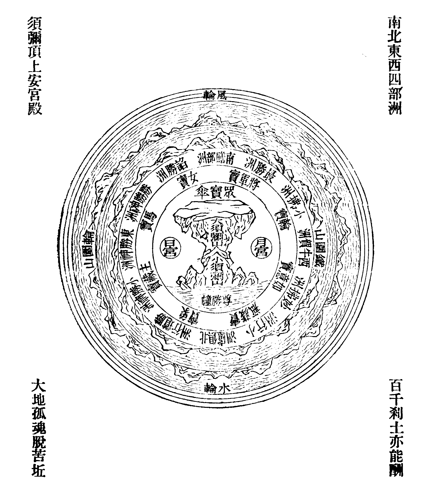
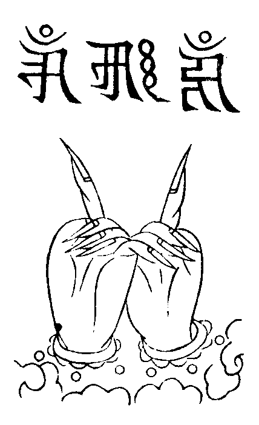
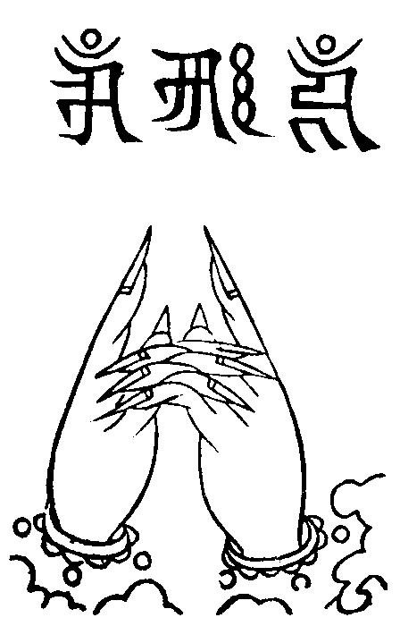
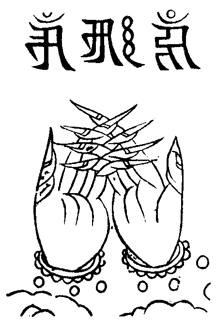
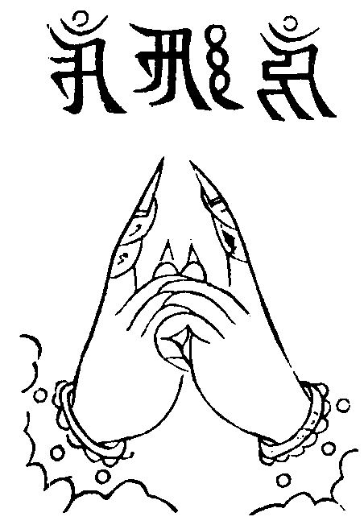
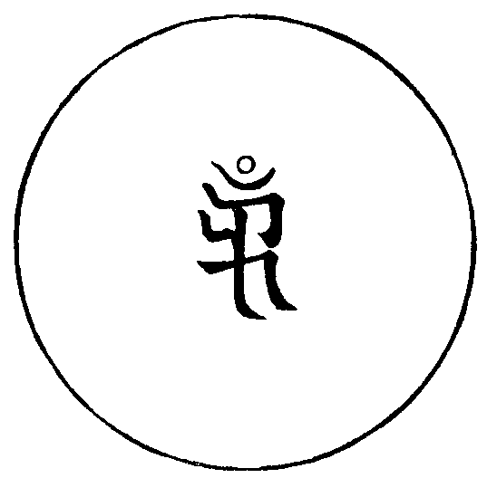

卍新纂大日本續藏經 第59冊
No.1083 修習瑜伽集要施食壇儀 (2卷)
【清 法藏著】
第 1 卷
No. 1083
修習瑜伽集要施食壇儀
(夫欲遍供普濟者。虔懇至誠。嚴飾道場。隨力備辦香花供養飲食淨水等。已準戌亥二時施之。餓鬼得食。施主獲福。如過其時。徒廢精神。於事無益。斯出本教。亦非胸見。今有違者。地方不寧。即此過也。若欲深明所以。請觀後註。文備彰矣 眾集定舉讚)。
爐香乍爇。法界蒙薰。瑜伽海會悉遙聞。隨處結祥雲。誠意方殷。諸佛現全身。
雲來集菩薩摩訶薩(三遍)。
此一瓣香。不從天降。豈屬地生。兩儀未判之先。根源充塞。三界一氣。纔分之後。枝葉徧滿十方。超日月之光華。奪山川之秀麗。即戒即定即慧。非木非火非煙。收來在一微塵。散處普薰法界。爇向爐中。專伸供養。常住三寶。剎海萬靈。歷代祖師。一切聖眾。河沙品類。幽顯聖凡。悉仗真香。普同供養。
香雲葢菩薩摩訶薩(三遍)。
佛面猶如淨滿月 亦如千日放光明
圓光普照於十方 喜捨慈悲皆具足
南無盡虗空徧法界過現未來佛法僧三寶。
登寶座菩薩摩訶薩(三遍)。
伏以。登瑜伽顯密之座。六度齊修。開濟物利生之門。三壇等施。一心湛寂。全身總是大悲王。三業應兮。脫體俱成[口*紇]哩hrīḥ 字。果然如是。則是因是果。不出自心。自利利他豈關餘物。化滴水作長河之酥酪。變微食為大地之斛食。於倐忽際。普濟大地之饑。虗在頃刻間。利益河沙之鬼趣。若也如斯會得。須當普利羣機。其或未然。不免重宣妙偈。所謂道。
南無大悲觀世音菩薩(眾和畢行人祝水文)。
夫此水者。八功德水自天真。先洗眾生業垢塵。徧入毗盧華藏界。箇中無處不超淪。水不洗水。妙極法身。塵不染塵。返作自己。蠲除器界。蕩滌壇場。灑枯木而再逢春。潔穢邦而成淨土。所謂內外中間無濁穢。聖凡幽顯總清涼(教有密言。謹當持誦)。
(大眾同聲。誦大悲神呪畢。表白舉)。
甘露王菩薩摩訶薩(三遍)。
(侍者白云何梵)。
淨法界真言
(誦真言時。調伏身心。想頂臍兩處具唵[口*藍]二字。令清淨故。以表福智圓滿oṃ 唵raṃ [口*藍])。
唵囕唵[口*藍]莎訶
點淨真言
(誦真言時。用右手無名指。搵取香水。彈灑虗空。并塗掌。想壇場內外悉令清淨)。
唵啞穆葛拶囉彌麻迎蘇嚕蘇嚕莎訶
加持花米真言
(誦真言時。手拈花米。三次想成光明種出生金銀碧玉珍寶之雲)。
唵斡資囉[口*普][口*彌]啞吽
加持鈴杵真言
(誦真言時。手拈花米。灑在鈴杵上。想成智慧種)。
唵斡資囉薩答啞吽
唵斡資囉看吒啞吽
唵啞吽(持杵振鈴誦)
此乃一切諸如來 手中執持金剛杵
金剛佛母大勇識 我亦恒常而執持
願滅有情大愚癡 唵賀囉賀囉吽(三遍)
左手執持微妙七寶鐸 洪音振動十方及三際
梵音嘹喨驚覺魔冤心 摧碎邪妖魍魎諸鬼魅
右手執持金剛降魔杵 威勢力重八萬四千觔
摧壞天與非天魔眷屬 普使回光返照而渴仰
內外冤魔三毒四害等 呪咀魘禱波旬及外道
三尖火輪遣魔變空力 能使顛倒夢想皆遠離
八方四面忿怒諸天魔 聞我作法諦聽而信受
唧[口*亡]叭怛秘密妙伽陀 彈指掃蕩兇惡及禍崇
十二因緣呪
唵耶答兒麻(二合)兮都不囉(二合)巴斡兮敦的山答塔葛答歇幹怛的山拶約尼嚕怛耶[口*邦]叭諦麻曷釋囉(二合)麻納耶莎訶
唵薩哩斡(二合)答塔葛達囉的捺麻曷曼答囉(二合)布拶彌渴薩謨的囉(二合)斯癹囉納三麻耶啞吽
五方五佛大威神 結界降魔徧剎塵
今宵毗盧冠上現 一瞻一禮總歸真
毗盧如來 慈悲灌頂(以右手取花米誦云)。
金剛上師三寶。
上師三寶真言
捺謨孤嚕(二合)毗耶(二合)捺謨勃塔耶
捺謨達而麻耶 捺謨桑渴耶
唵哩哩哈哈吽吽癹怛
唵失哩麻哈歌羅哈哈吽吽癹怛莎訶
唵啞吽
(將手持的花米。散灑虗空。想所落寶米悉成花香供養等雲)。
(撫尺云)。
羅列香花建寶壇 重重佛境一毫端
心融妙理虗空小 道契真如法界寬
相好慈悲秋月滿 化身騰處暮雲繁
香煙堆裏瞻應現 萬象森羅海印含
釋迦如來 證明功德(眾和)。
觀世音菩薩 密垂加護(眾和)。
阿難陀尊者 興權啟教(眾和振鈴念)。
自性偈
方便自性不壞體 金剛不壞大勇識
最勝無比超出相 今此所作皆成就
勝慧自性甚深性 演說最上法輪音
以無生現方便身 今此所作願得成
淨地偈
一切方隅所有地 瓦礫砂磧等皆無
琉璃寶地平如掌 柔軟微妙願安住
猶如極樂國莊嚴 妙寶為地眾花敷
園林池沼無缺少 以大法音願具足
從出世間復能現 種種七寶之所成
無量光明徧照處 諸佛菩薩願安住
音樂呪
唵斡資囉看支夷(二合)囉納囉納不囉(二合)囉納不囉(二合)囉納三不囉(二合)囉納三不囉(二合)囉納薩哩斡(二合)孛答赤的囉(二合)不囉拶哩答麻曷不囉(二合)尼牙(二合)巴囉蔑答那達速巴微薩哩斡(二合)塔哩麻(二合)[口*紇]哩(二合)達耶傘多沙納葛哩吽吽癹吒莎訶(置鈴於案)
唵牟尼叭[口*迷]吽(眾同念一百八遍)
緣起文
切以。法不孤起。仗境方生。道不虗行。遇緣即應。今則羅列華壇。闡揚佛事。香焚寶篆。騰五色之雲霞。燭綻金蓮。燦一天之星斗。法樂奏無生之曲。梵音演最上之宗。歸依五眼六通。迎請千賢萬聖。由是覺王住世。以法利生。不有因緣。無由垂範。是以阿難尊者。林間習定。夜見鬼王口吐火燄。頂髮煙生。身形醜惡。肢節如破車之聲。饑火交然。咽喉似針鋒之細。見斯怪異。問是何名。答曰面然。汝三日之中。當墮我類。阿難驚怖。歸投大覺慈尊。敘說前因。啟請救苦之法。佛垂方便。利濟洪深。使延年而益算。誦威德之真詮。令餓鬼以充資。施甘露之法食。加持必專於神呪。嚴衛須假於壇儀。雖然啟請一時。法傳千古。金山修建。不燭自明。摩伽斛食。施周法界。若無靈騐。今古焉傳。有是功勳。方堪演說。梵音演處。上窮有頂之天。唐韻宣時。下極風輪之際。欲明聖理。故白斯文。佛事完成。同歸真際 偈云。
最勝光明自在王 如來宣演妙難量
昔因慶喜生惶怖 燄口雷音報禍殃
稽首殷勤白教主 興慈濟物利生方
如今稽古重拈出 凡聖同遊解脫場
(以右手無名指取香水。彈灑曼拏囉上)。
唵斡資囉(二合)麻明啞吽(彈三遍)
(以右手無名指取香水。於曼拏囉上。右旋作一圓相。表福智圓滿故)。
唵斡資囉(二合)烏怛葛啞吽
(就念真言一遍。作圓相一匝。次加持花米。成光明種。如用之時。悉成如意珍寶供具)。
唵斡資囉(二合)普彌啞吽
(念真言時。以右手拈花米。三次畢。次雙手拈花米。放曼拏囉上。右旋散灑。如空注雨)。
唵斡資囉(二合)哩契啞吽(右呪俱七遍)
金剛地勝金剛地基吽字而作擁護。

(次排列花米位從中央起)。
唵唅彌囉微捺麻(大須彌山)
唵唅斯克徹(二合)麻彌囉微捺麻(小須彌山)
唵岩晡兒斡(二合)微的葛耶捺麻(東勝神洲)
唵岩的葛耶捺麻(小勝神洲)
唵岩微的葛耶捺麻(勝勝神洲)
唵[卄/覽]咱晡的癹耶捺麻(南贍部洲)
唵[卄/覽]沙茶耶捺麻(諂勝洲)
唵[卄/覽]烏答囉曼的哩(二合)尼耶捺麻(最勝洲)
唵藍啞咓囉孤答(二合)尼耶捺麻(西牛賀洲)
唵藍拶(二合)麻囉耶捺麻(小拂洲)
唵藍斡囉拶(二合)麻羅耶捺麻(妙拂洲)
唵鑁烏答囉孤囉尼捺麻(北俱盧洲)
唵鑁孤囉微捺麻(小行洲)
唵鑁葛囉斡(二合)耶捺麻(勝道行洲)
唵岩葛拶囉的捺(二合)耶捺麻(象寶)
唵囕[口*普]嚕沙哳囉的捺(二合)耶捺麻(主藏寶)
唵囕斡節囉的捺(二合)耶捺麻(馬寶)
唵鑁斯的哩(二合)囉的捺(二合)耶捺麻(女寶)
唵岩葛吒葛(二合)囉的捺(二合)耶捺麻(將軍寶)
唵囕吒吃囉(二合)囉的捺(二合)耶捺麻(輪寶)
唵[口*藍]麻尼囉的捺(二合)耶捺麻(如意寶)
唵鑁麻曷聶塔捺耶捺麻(寶藏瓶)
唵啞斯哩(二合)牙耶捺麻(日宮)
唵[口*藍]昝的囉耶捺麻(月宮)
唵啞吽捺麻(眾寶傘)
唵薩哩斡(二合)囉的尼(二合)毗藥(二合)捺麻(尊勝幢)
唵室哩(二合)麻忒(二合)斡資囉孤嚕拶囉捺葛麻辣耶三貌克答捺啞斡癹薩拏葛囉(二合)耶吽捺麻(念真言時。將花米臨曼拏囉上。及散灑虗空。想落寶米。悉成種種宮殿園林池沼傘葢幢幡衣服纓珞如意珠寶莊嚴等具。如空注雨。相續不斷。供養上師三寶。中圍手取花米。散灑虗空。念云)
人天所有種種供物。
唵薩哩斡(二合)答塔葛達囉的捺麻曷曼答囉(二合)布拶彌渴薩謨的囉(二合)斯癹囉納三麻耶啞吽(結印念呪)
唵薩哩斡(二合)答塔葛達薩叭哩咓囉(啞哩干巴丹)巴囉(二合)諦拶耶莎訶
(轉運結蓮花手印念五供養)。
唵薩哩斡(二合)答塔葛達薩叭哩咓囉
唵斡資囉不思必啞吽(花淡紅色)
唵斡資囉度必啞吽(香是黃色)
唵翰資囉啞嚕吉啞吽(燈紅赤色)
唵斡資囉干底啞吽(塗是白色)
唵斡資囉你微的啞吽(果紅黃色)
唵斡資囉(二合)捨不答布拶彌葛薩謨的囉(二合)斯癹囉納三麻耶啞吽(樂青綠色)
音樂呪
唵斡資囉(二合)看支夷囉納(二合)囉納(二合)不囉(二合)囉納不囉(二合)囉納三不囉(二合)囉納三不囉(二合)囉納薩哩斡(二合)孛答赤的囉(二合)不囉拶哩答麻曷不囉(二合)尼牙(二合)巴囉蔑答那達速巴微薩哩斡(二合)塔哩麻(二合)[口*紇]哩(二合)達耶傘多沙納葛哩吽吽和和啞龕莎訶(念呪將畢。手持鈴杵。於曼丹上。緊搖一遍。置鈴於案。次攝授寶錯。左手持於寶錯。右手結三尖印。遣魔徧空。於空性中自心月輪上。想成黃色得浪tra （二合）字中放光。利益一切有情。光回得浪tra （二合）字。一念變成黃色寶生佛。手結施印。為一不二竟。一念變成寶錯。如用之時。而令錯之)
寶錯真言
(念真言時。想寶錯內出生無盡諸天如意珍寶而奉獻之)。
撒花米真言
(師念真時。以左手執寶錯。右手拈米酒。於寶錯上。想落如意珍寶)。
唵薩不答(二合)囉的捺吽
遣魔真言
(以二手作金剛拳。手背相靠。二小指相鈎。二頭指直竪。結印當胸。想手印中出火光遣境界魔)。

唵斡資囉(二合)啞彌哩達昆吒唎曷納曷納吽吽癹吒
遣魔真言
(二手外相义。二頭指直竪。結印當胸。手動似扇。印出火光。而遺諸魔)。
唵斡資囉(二合)牙恰吽

遣魔真言
(以二手內相叉。十指仰上。結印當前。想印中放出金剛燄。令魔遠離)。

真空印呪
(二手內相叉。進禪力智直竪。念真言)。
唵莎[口*癹]斡順牙(二合)薩哩斡(二合)答哩麻(二合)莎[口*癹]斡順牙
(二合)達於空性中想。

[口*(隆-一)][口*(隆-一)](二合)[口*普][口*(隆-一)]bhrūṃ (二合)[口*普][口*(隆-一)]bhrūṃ (二合)啞啞啞吽吽吽。
而成十方世界。所有天妙曼。
怛。啞哩干。
濯足花香燈塗食樂。清徹無礙。猶如普賢化現種種雲集供養。徧滿虗空。充塞法界。盡輪迴際。無有間斷(結印念呪)。

唵薩哩斡(二合)答塔葛達薩叭哩咓囉(啞哩干巴丹)巴囉(二合)諦拶耶莎訶(運轉結蓮花手印。念五供養)
唵薩哩斡(二合)答塔葛達薩叭哩咓囉
唵斡資囉不思必啞吽
唵斡資囉度必啞吽
唵斡資囉啞嚕吉啞吽
唵斡資囉干底啞吽
唵斡資囉你微的啞吽
音樂呪
唵斡資囉(二合)看支夷囉納(二合)囉納(二合)不囉(二合)囉納不囉(二合)囉納三不囉(二合)囉納三不囉(二合)囉納薩哩斡(二合)孛塔赤的囉(二合)不囉拶哩答麻曷不囉(二合)尼牙(二合)巴囉蔑答那達速巴微薩哩斡(二合)塔哩麻(二合)紇哩(二合)達耶傘多沙納葛哩吽吽和和啞龕莎訶
十二因緣呪
耶唵答兒麻(二合)兮都不囉(二合)巴斡兮敦的山答塔葛達歇斡怛的山拶約尼嚕怛耶[嘟-者+(看-目)]叭諦麻曷釋囉(二合)麻納耶莎訶
唵啞吽(念三遍。就撒花米畢。持鈴念)
曼拏囉偈
諦想清淨廣大曼答辣 四洲充滿無量珠珍寶
一一皆如妙高摩尼聚 奉獻上師三寶願安住
曼拏囉真言
唵薩哩斡(二合)答塔葛達囉的捺(二合)麻曷曼答辣布拶彌葛薩謨的囉(二合)斯癹囉納三麻耶啞吽
寶山寶海妙寶座 天衣纓珞如意樹
寶池妙花香燈塗 週遍法界滿虗空
寶珠自性廣大海 七寶之中最殊勝
獻如雲聚妙寶供 我今虔誠而奉獻
中央八峯須彌盧 四大部洲諸形相
以日月等而圍遶 黃金白銀與寶玉
麻薩葛斡及琉璃 赤珠乃至石心等
奉獻上師三寶前 唯願慈悲哀納受
唵薩哩斡(二合)答塔葛達囉的捺(二合)麻曷曼答辣布拶彌渴薩謨的囉(二合)斯癹囉納三麻耶啞吽
我今依教建立曼拏囉 量等虗空金剛為寶地
字字密言惟心之所成 須彌日月七寶四天下
衣服傘葢伎樂幢旛雲 寶座珍羞樓閣并宮殿
池沼園林名花普遍布 奉獻上師三寶護神等
惟願慈悲納受生歡悅 屏除魔礙集福施安寧
今宵施主所求皆如意 盡未來際吉祥無間斷
唵薩哩斡(二合)答塔葛達囉的捺(二合)麻曷曼答辣布拶彌渴薩謨的囉(二合)斯癹囉納三麻耶啞吽
唯願上師三寶。中圍佛會。慈悲攝授。今辰施主。福慧莊嚴。世出世間吉祥如意。普及法界一切有情。速成無上佛果菩提。
捺謨孤嚕(二合)毗牙(二合)捺謨勃塔耶
捺謨達而麻耶 捺謨桑渴耶
唵啞吽(三遍畢。撒花米。撫尺一下念)
三歸依讚
佛法僧寶。體徧十方。恭敬請祈。必蒙感應。將當闡揚施食之初。先須歸敬三寶。要祈法事周隆。庶使勝因成就。大眾虔誠。隨聲應和。
志心信禮佛陀耶兩足尊。三覺圓。萬德具。天人調御師(唵啞吽)。凡聖大慈父。從真界騰。應質悲化普。竪窮三際時。橫遍十方處。震法雷。鳴法皷。廣演權實教(唵啞吽)。大開方便路若歸依能消滅。消滅地獄苦。
志心信禮達磨耶離欲尊。寶藏收。玉函貯。結集於西域(唵啞吽)。飜譯傳東土。祖師弘。賢哲判。成章疏。三乘分頓漸。五教定宗趣。鬼神欽。龍天護。道迷標月指(唵啞吽)。除熱真甘露。若歸依能消滅。消滅餓鬼苦。
志心信禮僧伽耶眾中尊。五德師。六和侶。利生為事業(唵啞吽)。弘法是家務。避囂塵。常宴坐。寂靜處。遮身服毳衣。充腹採薪薇。鉢降龍。錫解虎。法燈常遍照(唵啞吽)。祖印相傳付。若歸依能消滅。消滅旁生苦(古本此處宣意畢舉云)。
香雲葢菩薩摩訶薩。
施食壇儀卷上